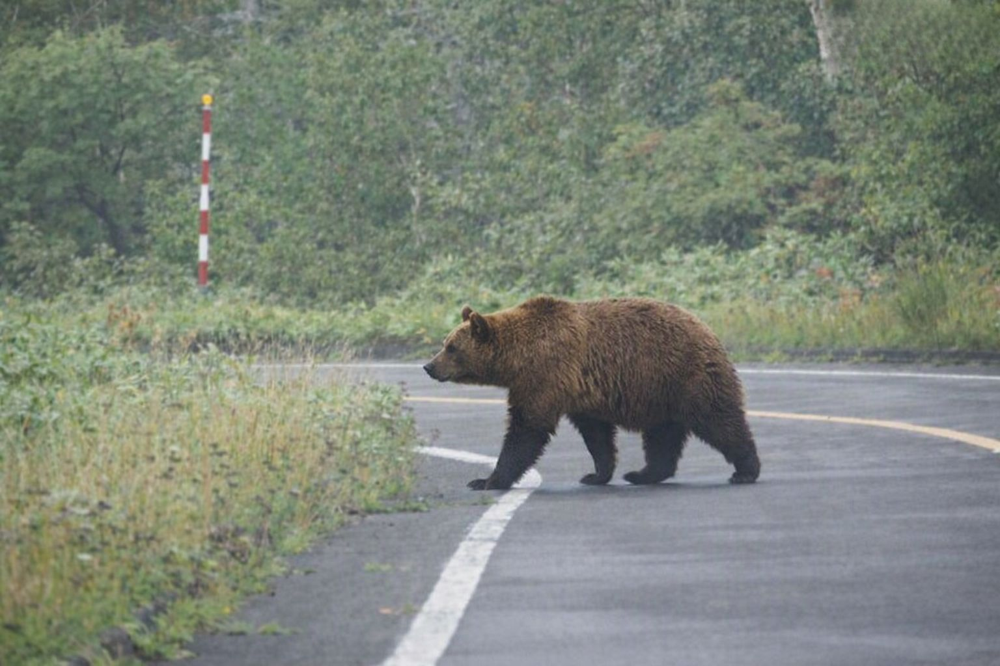
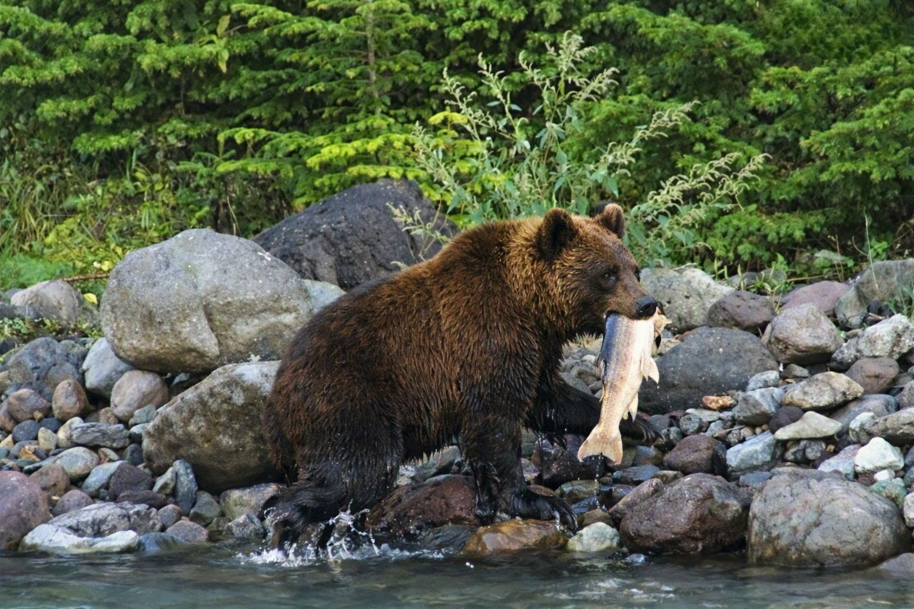
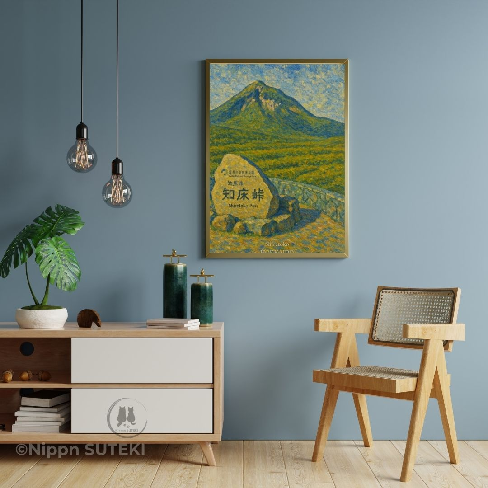

Shiretoko Doesn't Belong to You (And That's the Whole Point)
The rules are different when the bears were here first
by Sari
Hey hey, it's Sari! 🐾
So Kiri just spent an entire post being mysterious about a mountain and an island you can look at but never touch. Beautiful stuff. Very her. But she left out the best part of that whole road, so I'm here to fix that.
Picture this: you're driving through Shiretoko Pass, gorgeous mountain road, everything's going great — and suddenly every single car just stops. No accident. No construction. A brown bear is crossing the road, and it is taking its time about it.
Nobody honks. Nobody gets out for a closer look. Everyone just... waits. That's not a fluke. That's basically the whole personality of this place, and once you get it, you can't unsee it.
You're Not Sightseeing. You're Visiting Someone's House.
Most people roll up to Shiretoko thinking "cool, national park, let's go look at stuff." Fair assumption. Wrong one.
This forest belonged to the higuma — Hokkaido's brown bears — for generations before a single road was ever paved through it. They're not wildlife you happen to spot here. They're the ones who were already living here when everybody else showed up. Locals, basically. And the humans are the ones passing through.
Which, okay, I'll admit — brown bears get seriously big. We're talking way, way bigger than me, and I'm not exactly small for a cat. I'm not saying I'd want to run into one nose-to-nose. I'm saying they've earned the run of the place, and everyone here treats it that way.

Traffic doesn't stop for accidents here. It stops for landlords.
The Best-Run Neighborhood on Earth
Here's the part that actually blew my mind, though. Shiretoko isn't just "full of bears." It's full of bears because the whole system still runs almost exactly the way it did before anyone was around to mess with it.
Salmon fight their way up the rivers every year. Bears eat the salmon. Whatever's left over feeds the forest floor, which grows bigger trees, which keeps the whole place lush enough for deer and everything else to thrive too. Sea to river to forest to, well, everything — one uninterrupted loop, running on autopilot since basically forever.
That only works because development here stayed light. Sea and forest are still connected, no fences chopping the place into tourist-sized pieces. Which means the bears aren't cornered into some shrinking patch of wilderness — they've got the whole run of it, same as always.
I'll be honest, watching a fish swim by makes every instinct in my body go off. But even I know better than to mess with a system that's been working fine for thousands of years without my input.

Sea, river, forest — the same loop, running on its own since long before us.
House Rules (Written by the Bears, Basically)
Here's the thing that actually makes Shiretoko different from pretty much every other scenic drive you'll ever take: the humans are the ones who adapt. Not the wildlife. Us.
So if a bear's on the road, you wait it out — nobody stops the car to get a better look, nobody chases it for a photo. Nobody feeds it, obviously, and nobody leaves so much as a wrapper behind. It's not complicated. It's just respect, written into how the whole area operates.
Nobody here treats a bear like a monster to be scared of. They're just a neighbor you keep a respectful distance from, the same way you would with anybody whose front yard you're cutting through. No fences trying to "control" nature into behaving. Just people quietly agreeing to be the polite guest for once.
Honestly? I think that's kind of a flex. A whole region deciding the wild animals don't have to change a single thing about themselves for anybody.

Available now as an art poster — bring the view home, leave the neighborhood exactly as it is.
Same sunrise over Shiretoko Pass, same blazing autumn color, same quiet snowfall Kiri got all wistful about — the bears see every bit of it too. It's not a backdrop for us. It's just Tuesday, for them.
So yeah, when you hang this one on your wall, you're not just hanging a nice mountain view next to Kiri's unreachable island. You're hanging a small reminder that some places are still doing just fine without us running the show.
I think that pairs pretty well with her whole "beauty that stays out of reach" thing, honestly. Hers is about a place you can't go. Mine's about a place you can go — you just don't get to be in charge once you're there.
Anyway. Next time you're stuck in traffic for no reason, do me a favor and imagine it's a bear. Way better mood than road construction.
Talk soon — I've got a landlord to go not-bother! 🐾